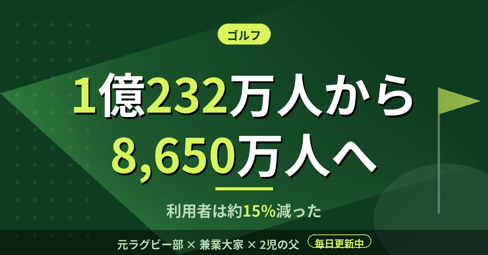

ゴルフゴルフ場の年間利用者数は1億232万人から8,650万人へ。月1〜3回回る僕の位置
社会人になってから、ゴルフは毎年月1回以上、シーズン中は月2〜3回のペースで回ってきた。コースに出ていると人は多いように感じるが、全国で見ると増えているのか減っているのか、考えたことがなかった。日本ゴルフ場経営者協会の数字を並べてみた。
年間の延べ利用者数は、1992年から約15％減っている
同協会が公表している利用税の課税状況の推移によると、ゴルフ場の年間延べ利用者数は、1992年の1億232万人が過去最大だった。2014年には8,650万人まで減っている。22年で1,582万人、割合にして15％ほどの減少になる。
一方、ゴルフ場の数は2002年の2,460場がピークで、2014年時点で2,336場とされている。利用者は大きく減ったのに、コースの数は124場しか減っていない。1場あたりの利用者数で見ると、かなり薄くなった計算だ。予約が取りにくいと感じたことがあまりないのは、このあたりが背景にあるのかもしれない。
2014年の数字で割ってみる。8,650万人を2,336場で割ると、1場あたり年に約3.7万人。1日に直すと約100人になる。18ホールを回るゴルフ場の、1日の延べ組数に直せば、1日25組前後という計算だ。休日の朝はもっと混み、平日の昼はもっと空いているので、あくまで平均の話である。
直近は、月ごとの数字で見る
直近の動きは、同じ協会の月次の数字で見られる。2025年3月度の利用者数は680万人で、前年同月より5,000人少なかった。2019年3月度との比較では7万6,000人の減少になる。ピークは2023年3月度の718万5,000人で、その後は2年連続で減ったと報じられている。
注意したいのは、これが月次の数字だということだ。3月だけを見て年間の傾向は言えないし、月ごとの天候や曜日の並びでも数字は動く。1992年から2014年までの長い減少と、直近の小さな増減は、分けて読む必要がある。
数字を見て、僕が思ったこと
利用者が減っている業界の中で、自分は回数を重ねている側にいる。練習に週2〜3回通っていた時期もあるので、ゴルフ場から見れば、数少ないリピーターの一人かもしれない。ただ、僕の場合は発注側として取引先と回る日も多い。純粋な趣味の回数だけで数字を作っているわけではない。
1992年と比べて利用者が約15％少ない時代に、同世代が一斉に始めたのが僕の周りの景色だった。全体が縮んでいても、自分の周りだけは増えて見える。全国の数字を見るまで、僕はそのずれに気づいていなかった。
取引先と回る日は、相手の都合で日程が決まる。平日の空いた時間に入ることもあれば、休日の朝一番に入ることもある。利用者の総数が減っているなかでも、日程の選び方で、混み方は日によって大きく違う。全国の平均と、自分が実際に回る日の景色は、別物だと考えておくのがちょうどいい。
数字を見たからといって、回数を増やすことも減らすこともない。月1〜3回という今の頻度が、全国から見てどの位置にあるのかを知っただけだ。
この記事は note にも掲載しています。